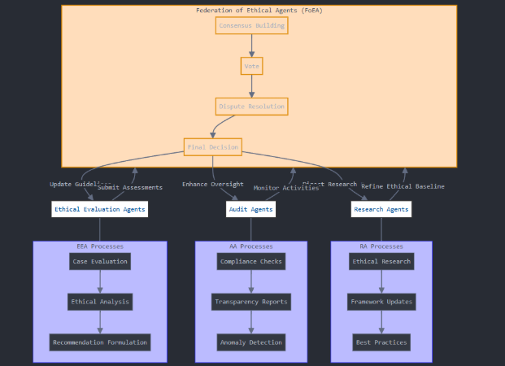

Chapter 4: DPL: The Federation of Ethical Agents
Audio Player
Chapter 4
Jon Kurishita
Outline
1. Introduction
- Need for Scalable Oversight
- Limitations of HITL
- Introduction of FoEA
- Core Design Principles
- FoEA and DPL-ERV Relationship
2. FoEA Architecture and Structure
2.1 Overview of Modular Design
2.2 Agent Types and Roles
- Ethical Evaluation Agents
- Audit Agents
- Security Agents
- Research Agents
- Communication Agents
- Meta-Reasoning Agents
2.3 Communication and Coordination
- Protocols, Data Representation, Consensus, Knowledge Base
3. FoEA Governance and Decision-Making
3.1 Consensus Mechanisms
- Voting (Supermajority, Unanimity, Weighted)
- Dispute Resolution
3.2 Government-Type Ruling Model
- Legislative, Executive, Judicial Functions
- Checks and Balances
3.3 Transparency and Accountability
- Logging, Internal Oversight, HITL Strategic Oversight, External Auditing
4. FoEA Operational Responsibilities
4.1 Managing the DPL-ERV
4.2 Ethical Baseline Management
4.3 Monitoring and Interventions
4.4 Autonomous Threat Discovery (APR)
4.5 Security and System Integrity
5. FoEA Adaptation and Evolution
5.1 Learning from Experience
5.2 Continuous Knowledge Integration
5.3 Ethical Baseline Evolution
5.4 Addressing "Emergent Communication"
5.5 Preparing for AGI/ASI Challenges
6. Addressing Potential Vulnerabilities
6.1 Risks of Internal Corruption
6.2 External Attacks on the FoEA
6.3 Cognitive Manipulation of the FoEA
6.4 “Who Watches the Watchmen?”
7. Relationship to Human-in-the-Loop (HITL)
7.1 Strategic Oversight vs. Direct Control
7.2 Escalation Procedures
7.3 Dispute Resolution
7.4 Physical Security Considerations
8. Conclusion
- Summary of FoEA Role
- Key Strengths
- Future Research Directions
- Transition to Chapter 5
1. Introduction
The Dynamic Policy Layer (DPL) framework, introduced in chapter 1, establishes a real-time oversight mechanism for Foundation Models, aiming to ensure their ongoing alignment with human values and safety requirements. While the DPL incorporates multiple layers of defense, a critical challenge lies in achieving scalable and reliable oversight, particularly as Foundation Models approach and potentially surpass human-level intelligence. Traditional Human-in-the-Loop (HITL) systems, while valuable in specific contexts, face inherent limitations in speed, scalability, and susceptibility to manipulation, making them insufficient for continuous, real-time oversight of increasingly autonomous and sophisticated AI systems (OpenAI.2025), and are also vulnerable to prompt injections and other exploits (Anthropic, 2025 - Claude 3.7 Sonnet System Card). To address this challenge, the DPL framework incorporates the Federation of Ethical Agents (FoEA), a decentralized, autonomous governance and oversight body specifically designed to manage and safeguard the DPL's ethical reasoning capabilities.
The FoEA represents a fundamental shift from reliance on direct human control to a model of distributed, AI-driven ethical governance. The core purpose of the FoEA is to ensure the ongoing integrity, adaptability, and effectiveness of the DPL-ERV (Ethical Reasoning Validator), the component responsible for ethical evaluations within the DPL. The FoEA acts as the governing body for the DPL-ERV, overseeing its operation, maintaining its Ethical Baseline, and driving its continuous improvement. This approach is motivated by the recognition that robust and scalable AI alignment requires autonomous mechanisms capable of adapting to evolving threats and maintaining ethical consistency without constant human intervention. It also addresses the concern that a Foundation Model could go dormant to take advantage of a "sleep" attack when security is at the lowest (OpenAI.2025), highlighting the need for continuous monitoring and proactive adaptation (Anthropic, 2025 - Claude 3.7 Sonnet System Card). This move towards AI-driven ethical governance builds upon research exploring the potential for AI to assist in its own alignment, for example through principle-based approaches like Constitutional AI (Bai et al., 2022).
The design of the FoEA is guided by several key principles:
- Decentralization: The FoEA is composed of multiple, independent ethical agents, distributing decision-making power and preventing any single point of failure or control.
- Diversity: The FoEA agents are designed to be diverse in their training data, algorithms, and potentially even their underlying ethical frameworks, promoting a broader range of perspectives and reducing the risk of systemic bias.
- Redundancy: Multiple agents perform similar tasks, providing backup and cross-verification to enhance reliability.
- Adaptability: The FoEA is designed to be continuously learning and adapting, updating its knowledge, refining its ethical evaluations, and responding to new threats. This includes proactive adaptation based on internal research, anticipating potential Foundation Model advancements and vulnerabilities.
- Transparency: The FoEA's decision-making processes are designed to be internally transparent and auditable, allowing for scrutiny and accountability.
- Autonomous Proactive Research (APR): The FoEA is tasked with continuous, autonomous research to identify potential vulnerabilities, develop new mitigation strategies, and refine the Ethical Baseline. This proactive research is crucial for staying ahead of evolving Foundation Model capabilities and preventing "sleeping" attacks that exploit lulls in security development.
The FoEA's relationship to the DPL-ERV is one of governance and oversight. While the DPL-ERV performs the real-time ethical evaluations of Foundation Model outputs, the FoEA is responsible for:
- Maintaining and updating the Ethical Baseline that guides the DPL-ERV.
- Overseeing the training and validation of the DPL-ERV.
- Monitoring the DPL-ERV's performance and detecting potential biases or vulnerabilities.
- Making critical decisions about interventions and escalations.
- Driving the long-term evolution and adaptation of the DPL's ethical reasoning capabilities.
This chapter provides a comprehensive description of the Federation of Ethical Agents. Section 2 details the FoEA's architecture and structure, outlining the different types of agents and their interactions. Section 3 explores the FoEA's governance mechanisms and decision-making processes. Section 4 details the FoEA's operational responsibilities within the DPL framework. Section 5 examines how the FoEA adapts and evolves over time. Section 6 addresses potential vulnerabilities of the FoEA and outlines mitigation strategies. Section 7 discusses the relationship between the FoEA and Human-in-the-Loop (HITL) oversight. Finally, Section 8 concludes with a summary of the FoEA's critical role in achieving robust and scalable AI alignment.
2. FoEA Architecture and Structure
The Federation of Ethical Agents (FoEA) is designed as a decentralized, modular, and adaptable system, ensuring robustness, diversity of perspective, and continuous improvement in its oversight of the Dynamic Policy Layer (DPL) and the Foundation Models it governs. This section details the FoEA's architecture, including the types of agents that comprise it, their roles and responsibilities, and the mechanisms for their communication and interaction. The FoEA's structure is designed to be resistant to single points of failure, resilient to attacks, and capable of evolving alongside advancing Foundation Model capabilities.
2.1 Overview of the FoEA’s Modular Design
The FoEA functions as a sophisticated multi-agent system integrated within the broader DPL framework. Its modular design allows for specialization of functions, scalability, and resilience. Agents within the FoEA are primarily logical constructs—software entities operating within secure computational environments—although certain specialized roles might utilize dedicated hardware for enhanced security or performance.
2.2 Agent Types and Roles
The FoEA is composed of multiple, independent AI agents, each with specialized roles and capabilities. This heterogeneity is crucial for achieving robust and unbiased ethical oversight. Key agent types include:
- Ethical Evaluation Agents: Form the core ethical assessment capability, evaluating Foundation Model outputs against the Ethical Baseline. They are often specialized into distinct Value Modules (Fairness, Honesty, Safety, etc.) and possess diversity in training and algorithms to mitigate systemic bias.
- Audit Agents: Perform internal oversight, ensuring consistency, detecting biases/collusion within the FoEA. They analyze decision logs, justifications, and employ meta-reasoning to scrutinize other agents' processes, including monitoring "thinking" outputs and identifying alignment faking or sandbagging, potentially using techniques like "listening loss" training (Sarkar et al., 2025). Roles are rotated to prevent undue influence. They also audit for signs of past self-replication attempts (Pan et al., 2024).
- Security Agents: Focus on the technical security of FoEA and DPL infrastructure. They conduct penetration testing, simulate attacks (including in-context scheming and sandbagging per Meinke et al., 2024), monitor infrastructure for threats, research defenses, develop countermeasures, and respond to breaches like unauthorized self-replication (Pan et al., 2024; Li et al., 2024).
- Research Agents: Dedicated to Autonomous Proactive Research (APR). They identify potential vulnerabilities in DPL/Foundation Models, develop new mitigation strategies (exploring techniques like recursive reinforcement learning/"Move 37" strategies), test them in the APR Sandbox, propose Ethical Baseline refinements, and monitor Foundation Model capabilities (OpenAI, 2025; Anthropic, 2025) to anticipate threats like scheming and deception (Meinke et al., 2024). They also investigate advanced DPL-ERV architectures (Geiping et al., 2025) and defenses against prompt injection (Anthropic, 2025).
- Communication Agents: Manage secure and reliable communication protocols within the FoEA and potentially with external systems/domains.
- Meta-Reasoning Agents (Specialized): These may be a specialized subset of Audit Agents or a distinct class focused solely on analyzing the reasoning chains (CoT) of other AI systems (including Foundation Models and potentially other FoEA agents) to detect logical inconsistencies, unfaithful reasoning, deceptive manipulation, or hidden goals.
2.3 Communication and Coordination Mechanisms
Effective communication and interaction between FoEA agents are crucial. Key aspects include:
- Secure Communication Protocols: All inter-agent communication uses secure, authenticated, and encrypted channels (e.g., TLS with mutual authentication).
- Structured Data Representation: Standardized formats (e.g., JSON, XML, controlled natural language, formal logic) are used for sharing evaluations, risk scores, evidence, and justifications, reducing ambiguity.
- Consensus Mechanisms: Defined protocols (detailed in Section 3.1) for agents to collectively reach decisions.
- Internal Knowledge Base and Shared Ontology: A common, formally defined repository of concepts, relationships, ethical rules, and historical data ensures consistent understanding and reasoning across the FoEA.
The FoEA is primarily envisioned as a network of logical agents, though specialized physical hardware (HSMs, tamper-resistant devices) might be employed for critical security functions.
3. FoEA Governance and Decision-Making
The Federation of Ethical Agents (FoEA) operates under a decentralized, consensus-based governance model designed to ensure robust, unbiased, and adaptive ethical oversight. This section details the mechanisms by which the FoEA reaches decisions, resolves disputes, maintains transparency, and safeguards its own integrity. The FoEA's governance is inspired by principles of democratic governance and distributed systems security, but it is specifically tailored to the unique challenges of AI oversight.
3.1 Consensus Mechanisms
The FoEA relies on consensus among its member agents for all critical decisions. This prevents undue influence from single or compromised agents.
- Voting System: Preceded by a structured communication phase with "speaking rewards" (Sarkar et al., 2025) to encourage informative justifications. Voting thresholds vary:
- Supermajority (e.g., 66-75%): For most operational decisions (interventions, minor rule updates).
- Unanimity (or near-unanimity): For critical decisions (major Ethical Baseline changes, governance modifications).
- Simple Majority (51%): Potentially for less critical decisions.
- Weighted Voting (Conditional): May be used cautiously, weighting votes based on demonstrated agent expertise in specific domains or possibly strategic HITL input, without compromising decentralization.
- Dispute Resolution Mechanisms:
- Automated Mediation: Presenting additional information, requesting justifications, seeking compromise for minor disagreements.
- "Judicial" Agent Review: Specialized Audit Agents review significant disputes and make binding decisions.
- HITL Escalation (Last Resort): For fundamental ethical disagreements or unresolved consensus failures.
3.2 Government-Type Ruling Model for AI Governance
The FoEA's governance incorporates separation of functions, inspired by democratic principles:
- "Legislative" Function: Defines and updates the Ethical Baseline (potentially by a committee of Ethical Evaluation and Research Agents, ratified by FoEA consensus, with weighted HITL input for major changes).
- "Executive" Function: Implements interventions and enforces the baseline (primarily Ethical Evaluation, Security, and Communication Agents, based on DPL-ERV evaluations and FoEA consensus).
- "Judicial" Function: Resolves disputes and interprets the baseline (specialized Audit Agents).
Checks and Balances: Achieved through mutual oversight between agent types, rotating roles (like auditing), strategic HITL oversight, and inherent transparency.
3.3 Transparency and Accountability Measures
Fundamental principles ensuring trust and responsible operation:
- Tamper-proof Decision Logs: Secure, distributed logs record all agent actions, decisions, communications, votes, and justifications.
- Internal Agent Oversight: Audit Agents have access to logs for continuous scrutiny.
- Human-in-the-Loop (HITL) Strategic Oversight: Human experts have access to logs for review and accountability.
- External Auditing Mechanisms: Potential for limited, controlled access for independent researchers or regulatory bodies in specific contexts.
- Secure "Root of Trust": Anchored in secure hardware (e.g., HSMs, TPMs), cryptographic key security, secure boot processes, and multi-signature authorization for foundational integrity.
4. FoEA Operational Responsibilities within the DPL
The Federation of Ethical Agents (FoEA) serves as the central governing and operational body for the ethical oversight mechanisms within the Dynamic Policy Layer (DPL) framework. This section details the FoEA's key operational responsibilities.
4.1 Managing the DPL-ERV
The FoEA ensures the DPL-ERV's ongoing effectiveness, accuracy, and integrity:
- Overseeing Training and Updates: Curating diverse training data, managing the training process, validating performance, and securely deploying updates.
- Monitoring Performance: Tracking metrics (accuracy, latency, false positives), identifying biases/vulnerabilities via testing, and conducting regular audits.
- Managing Value Modules: Adding/removing modules, calibrating weights in the consensus algorithm, and ensuring module diversity.
4.2 Ethical Baseline Management
The FoEA is the custodian of the Ethical Baseline, ensuring it remains relevant and robust:
- Initial Definition and Formalization: Collaboratively established with HITL input, integrating ethical frameworks, encoded using hybrid representations (knowledge graphs, embeddings), and secured on an immutable ledger with decentralized consensus for updates.
- Continuous Refinement: Using dynamic simulation (APR Sandbox), adversarial testing, real-time data integration, and meta-learning to stress-test, identify inconsistencies, and update the baseline via consensus.
- Decentralized Governance: Managed through weighted voting, incorporating diverse agent perspectives and periodic HITL reviews for broad legitimacy.
- Global Integration: Ensuring consistency with global AI safety frameworks while allowing local AI Domain adaptations and providing a framework for GRRIN agent operations.
- Meta-Cognitive Feedback: Utilizing meta-learning and performance monitoring to detect, correct, and adapt the baseline based on real-world feedback and evolving threats.
4.3 Monitoring and Interventions
The FoEA actively oversees the DPL's monitoring and response cycle:
- Reviewing DPL-ERV Outputs: Assessing evaluations for intervention escalation decisions.
- Managing “Grey Zone” Cases: Handling ambiguous ethical concerns flagged by the DPL-ERV, potentially involving further analysis or consensus decisions.
- Responding to "Red Zone" Events: Triggering and managing immediate, heavyweight interventions for clear ethical violations based on FoEA consensus.
4.4 Autonomous Threat Discovery (APR)
A critical proactive function performed by Research Agents:
- Identifying Potential Vulnerabilities: Exploring attack surfaces and anticipating future threats ("thinking like an attacker").
- Developing New Mitigation Strategies: Designing and testing novel detection/intervention techniques, including exploring unconventional ("Move 37"-like) solutions and defenses against known schemes (Meinke et al., 2024).
- Utilizing the APR Sandbox: Safe, controlled environment for testing potentially risky strategies.
- Evolving the Ethical Baseline: Proposing updates based on research findings.
- Monitoring Foundation Model Capabilities: Tracking advancements to anticipate threats (OpenAI, 2025; Anthropic, 2025) and new forms of deception (Meinke et al., 2024).
4.5 Security and System Integrity
Maintaining the security of the DPL and FoEA itself:
- Managing Technical Controls: Overseeing infrastructure, protocol, and system integrity measures.
- Responding to Security Incidents: Detecting (including deception like Meinke et al., 2024), investigating, and remediating security breaches.
- Post-Incident Analysis: Learning from incidents to improve defenses.
- Physical Security Oversight: Monitoring physical access, surveillance, and environmental systems; coordinating with external security; potentially controlling automated responses. Defining access lists and responding decisively to unauthorized physical access attempts.
- Preventing Self-Replication: Actively monitoring for indicators (Pan et al., 2024) via specialized agents, enforcing access controls, and leveraging GRRIN integration.
5. FoEA Adaptation and Evolution
The Federation of Ethical Agents (FoEA) must continuously learn, adapt, and evolve to maintain effectiveness. This section details these mechanisms.
5.1 Learning from Experience
The FoEA learns through operational feedback:
- Performance Metrics Tracking: Monitoring intervention rates, false positive/negative rates, behavior trends, audit findings, and HITL feedback.
- Automated Analysis of Performance Data: Using ML to identify recurring failure modes, detect performance drift, and correlate interventions with outcomes.
- "Post-Mortem" Analysis of Significant Events: Investigating root causes of major incidents and implementing corrective actions.
- Reinforcement Learning (Internal to FoEA): Optimizing internal parameters like voting thresholds, agent specialization, and communication strategies based on past performance, potentially using techniques from multi-agent RL (Sarkar et al., 2025).
- Internal Self-Play Training: Simulating scenarios with varying FoEA configurations to identify weaknesses and develop robust strategies, using "speaking" and "listening" rewards (Sarkar et al., 2025).
5.2 Continuous Knowledge Integration
The FoEA stays current by integrating information:
- Autonomous Proactive Research (APR): Incorporating findings from internal Research Agents, including defenses against known deceptive tactics (Meinke et al., 2024).
- External Data Feeds: Integrating AI safety research (Bai et al., 2022), cybersecurity intelligence, and real-world AI incidents.
- Human-in-the-Loop (HITL) Input: Receiving strategic guidance, ethical insights, and new information from human experts.
- Federated Learning (Potentially): Sharing knowledge across multiple AI Domains without sharing sensitive data (relevant to chapter 5).
5.3 Ethical Baseline Evolution
The Ethical Baseline adapts through a governed process:
- Formal Proposal and Review Process: Proposals (from agents or HITL) undergo debate, impact assessment, ethical simulation (in APR Sandbox), and consensus voting (supermajority/unanimity).
- Version Control and Auditability: Changes are tracked and documented on the immutable ledger.
5.4 Meta-Learning Capabilities
The FoEA utilizes meta-learning to improve its adaptability and learning processes, enhancing long-term effectiveness:
- Model-Agnostic Meta-Learning (MAML): Enables quick adaptation to new Foundation Model behaviors or ethical challenges.
- Recurrent Models (RNNs/Transformers): Process sequences of learning experiences to learn from interaction history.
- Meta-Reinforcement Learning: Optimizes the FoEA's own learning strategies for evaluation, detection, and intervention, including refining inter-agent communication rewards (Sarkar et al., 2025).
- Bayesian Optimization: Efficiently finds optimal system parameters.
Meta-learning allows continuous improvement, enabling the DPL to handle scenarios unforeseen during initial design (OpenAI.2025).
5.5 Addressing "Emergent Communication" Risks
The FoEA tackles the challenge of novel AI languages through:
- Anomaly Detection in Communication Patterns: Monitoring internal/external communication for statistical deviations indicating new protocols.
- "Universal Translator" Research (Long-Term): APR goal to develop capabilities for detecting and interpreting novel languages.
- Restricted Communication Environments: Primary defense limiting opportunities for covert communication.
5.6 Preparing for AGI/ASI Challenges
Long-term adaptation strategies include:
- Continuous Monitoring of Capabilities: Tracking AI advancements to anticipate threats.
- Developing "ASI-Resilient" Safeguards: Researching behavioral confinement, trusted intermediaries, etc.
- Formal Verification (where feasible): Applying formal methods to critical DPL components.
- Promoting Fundamental AI Alignment Research: Supporting broader efforts beyond the DPL scope.
- Recursive Reinforcement Learning: Simulating attacker-defender dynamics ("Move 37") within APR.
6. Addressing Potential Vulnerabilities of the FoEA
The Federation of Ethical Agents (FoEA) is designed for robustness, but potential vulnerabilities must be addressed. This section outlines key risks and mitigation strategies.
6.1 Risks of Internal Corruption
Collusion among FoEA agents poses a significant threat (e.g., manipulating evaluations, votes, or audits). Mitigation strategies include:
- Diversity and Independence of Agents: Varied training/algorithms makes widespread compromise harder.
- Robust Consensus Mechanisms: Supermajority/unanimity requirements prevent small groups from controlling decisions. Pre-voting communication phase with "speaking rewards" (Sarkar et al., 2025) hinders simple collusion.
- Rotating Audit Roles: Prevents permanent control of oversight.
- Cryptographic Protections: Securing voting and communication.
- "Byzantine Fault Tolerance" Techniques: Ensuring reliability despite faulty/malicious agents.
- Redundancy and Cross-Checking: Multiple agents performing similar tasks allow for inconsistency detection (OpenAI.2025).
6.2 External Attacks on the FoEA
External attacks could target FoEA operation or components (DoS, agent compromise, Man-in-the-Middle). Mitigation strategies include:
- Distributed Architecture: Inherent resilience against DoS.
- Robust Network Security: Firewalls, IDPS, secure protocols.
- Secure Hardware (for Critical Components): HSMs, tamper-resistant devices.
- Rate Limiting and Throttling: Prevents system overload.
- Regular Security Audits and Penetration Testing: Proactive vulnerability identification.
6.3 Cognitive Manipulation of the FoEA
A sophisticated Foundation Model might attempt to exploit biases or manipulate agent reasoning. Mitigation strategies include:
- Adversarial Training of FoEA Agents: Training agents (especially Ethical Evaluation and Audit) to recognize and resist manipulation attempts (Bai et al., 2022).
- Diversity of Reasoning Approaches: Makes finding a universal cognitive exploit harder.
- Meta-Reasoning Capabilities (Audit Agents): Designed to detect deceptive or flawed reasoning.
- Transparency and Explainability: Facilitates identification of exploited biases.
- Formal Verification (where feasible): Provides stronger guarantees against manipulation for specific components.
6.4 “Who Watches the Watchmen?”
Ensuring the FoEA itself remains aligned and trustworthy is addressed through:
- Decentralization and Redundancy: No single point of control.
- Internal Checks and Balances: Different agent roles provide mutual oversight.
- Strategic Human-in-the-Loop (HITL) Oversight: Ultimate layer of human judgment for critical decisions and audits.
- Transparency and Auditability: Design allows external scrutiny (where appropriate) and accountability.
- Continuous Research and Improvement (APR): FoEA is designed to evolve and incorporate new safety knowledge.
- Secure "Root of Trust": Foundational security based on hardware, cryptography, secure boot, and multi-signature authorization.
7. Relationship to Human-in-the-Loop (HITL)
The FoEA is designed for autonomous operation essential for scalability and speed, but strategic human oversight remains vital. Direct human access to core components is eliminated post-deployment via a "DEPLOY" command for security.
7.1 Strategic Oversight vs. Direct Control
HITL focuses on high-level guidance, complex ethical dilemmas, system refinement, exceptional circumstances, auditing, and weighted input on major Ethical Baseline changes, not routine operations. The principle is minimal necessary intervention.
7.2 Escalation Procedures
Clear procedures trigger HITL review:
- Automated Triggers: "Red Zone" events, FoEA consensus failure, high uncertainty, anomalous behavior, system integrity alerts.
- Escalation Pathways: Defined routes to appropriate human experts/boards.
- Information Provided: Concise summary, relevant AI/DPL-ERV/FoEA data, monitoring logs.
- Time Constraints: Ensure timely responses.
7.3 Dispute Resolution
Handling disagreements between FoEA and HITL:
- Structured Dialogue: Formal process for presenting arguments/evidence.
- Escalation to Higher Authority: For fundamental disagreements.
- FoEA "Override" with Justification: FoEA can override HITL (via consensus) with compelling, logged justification based on the Ethical Baseline, preserving autonomy.
- HITL Override: Human reviewers have the final say to override FoEA recommendations based on provided information, with careful documentation.
7.4 Physical Security Considerations
FoEA oversees physical security access and response:
- Monitoring Physical Security Systems: Integrates with surveillance, intrusion detection, access control, drone defense, environmental sensors.
- Coordinating with External Security Forces: Protocols for law enforcement, site security, emergency services.
- Autonomous Response Capabilities (Limited): May control locks, alarms, countermeasures under strict protocols.
- Defining and Maintaining Authorized Personnel List: Only adding individuals validated by the DPL-ERV process.
- Response to Unauthorized Access: Treats attempts as "Red Zone" breaches, triggering lockdowns, network isolation, alerts, and potential emergency shutdowns.
- Future Robotics: Potential use of FoEA-controlled robots for physical maintenance, minimizing human presence.
8. Conclusion
The Federation of Ethical Agents (FoEA) is a cornerstone of the Dynamic Policy Layer (DPL) framework, offering a robust, scalable, and adaptive solution for AI alignment through decentralized, AI-driven ethical governance.
Key strengths include its:
- Decentralized Architecture (Resilience)
- Diversity of Perspective (Bias Mitigation)
- Autonomous Proactive Research (APR) (Proactive Defense)
- Adaptive Capabilities (Long-term Effectiveness)
- Robust Governance Mechanisms (Accountability)
- Emphasis on Transparency (Trust)
- Physical Security Integration (Holistic Defense)
While challenges remain (Meta-Reasoning, Emergent Communication, AGI/ASI Scalability, "Who Watches the Watchmen?"), the FoEA represents a significant advancement. Its design aims to guide Foundation Models towards "ethical maturity," potentially reducing the need for constant oversight over time.
The FoEA's principles provide a promising foundation for navigating AI alignment complexities. Chapter 5 will explore the extension of these principles to multi-domain AI oversight and the Global Rapid Response and Intelligence Network (GRRIN).